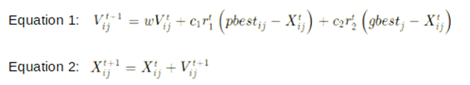
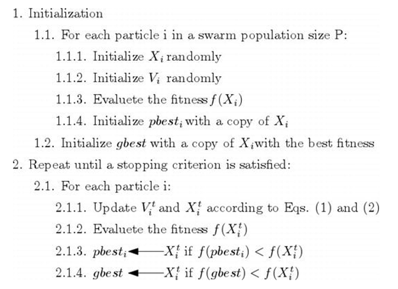

8.5: Particle Swarm Optimization
The particle swarm optimization
(PSO) is an optimization algorithm that tries to iteratively improve candidate
solutions. Individual candidate solutions are known as particles. The
population of all candidate solutions, which comprises all particle candidate
solutions, is called a swarm. It tries to move the candidate particles in the
search space using the position of the particle and velocity. Each particle
tries to move toward the best-known position, based on the better position
found by the particle itself and also the better position found by other
particles collectively in the swarm. This helps the swarm to collectively move
towards better solutions. This process is iteratively repeated to find the best
possible solution.
It is inspired by the collective
behavior of animals such as birds. For example, a swarm of birds is a swarm of
insects. Let's take the example of a flock of birds. A flock of birds flies to
find a place where food availability is maximum and the presence of predators
is minimum. If a bird has to change its direction from its flock, it does so by
changing its direction and redirecting its force in the new direction. Birds
also share information amongst themselves about changes in direction. Once the
best place is found by one of the swarm s members, the rest of the birds follow
the direction of the first bird to change direction. By sharing information,
birds of the flock together have a greater chance of survival than if they had
to survive alone.
Let's try to understand the
mathematics behind PSO. X is an n-dimensional vector that tries to optimize a
given objective function f(X). Here n is the number of factors or variables
that have an impact on the outcome. For birds, it can be the longitude and
latitude of the place where they want to land. For P particles in the swarm
that goes through the t number of iterations, the position vector can be
represented as Xti = (xi1 xi2 xi3 xin)T. The velocity vector can be
represented as Vti =
(vi1 vi2 vi3 vin)T.
Individual particles are denoted as i and have values from 1 till P. Position
and velocity vectors are updated through j dimensions with the help of the below
2 equations, where j has values from 1 till n.

Equation 1 is used for updating the
velocity of the particles, whereas equation 2 is used for changing the
particle's positions. In the above two equations, c1 and c2 are positive
acceleration constants. The constant c1 relates to previous learning by the
same particle, whereas the constant c2 is a social learning constant. r1 and r2
are random values between 0 and 1 and help PSO to avoid getting stuck at local
minima/maxima and increase the likelihood of finding global minima/maxima. w is
inertia weight constant and is a positive number. It helps update velocity by
multiplying the previous velocity and the weight constant. If it is kept above
0 but less than 1, the swarm will be able to explore more solutions in the
searching domain and have more chances of getting global minima. Although, as a
consequence, it can increase the computation time.
The pbest
represents individual learning, whereas gbest
represents global learning. If the pbest term (pbestij - Xijt)
increases, it can help individual ith particles towards the best
possible position. If the gbest term (gbestj - Xijt)
increases, it can help find the global best of the swarm.
Figure 8.5.1 below is the flowchart
of PSO [3].

Figure 8.5.1: Flowchart of particle
swarm optimization
We can use the function ParticleSwarmOptimization in the feature selection object fsObj for performing particle swarm optimization. Below is how
the syntax will look like.
best_columns = fsObj.ParticleSwarmOptimization(iterations = 25,
swarmSize
= 75,
run_time=1200)
In this syntax example, we have
executed particle swarm optimization for 25 iterations. Within each iteration,
we have swarm size of 75. Execution time limit is set for 1200 minutes.